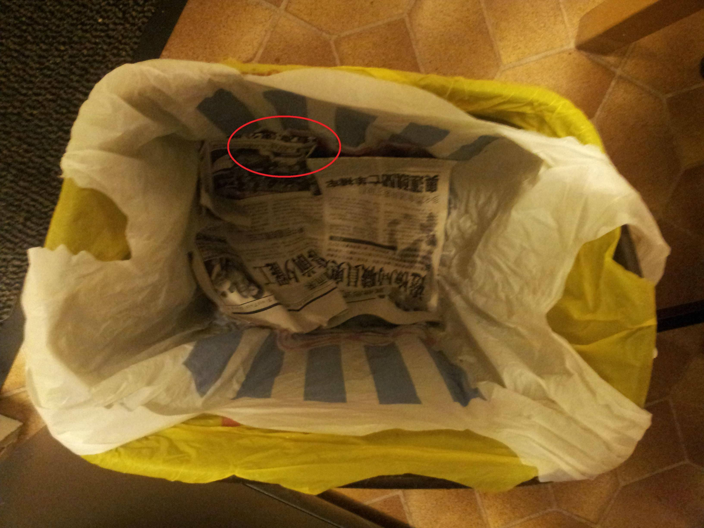
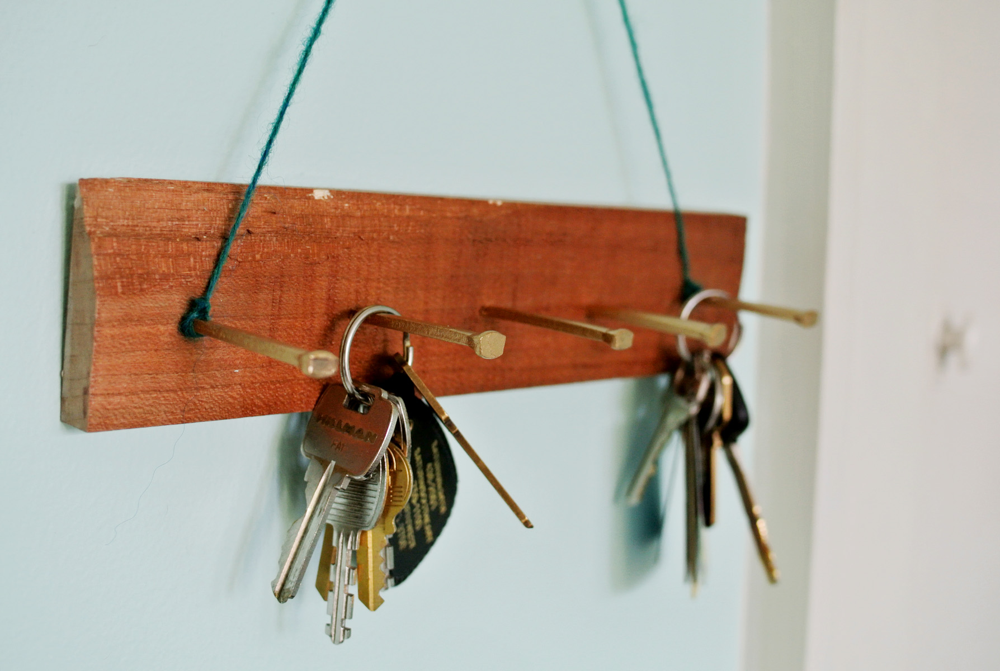
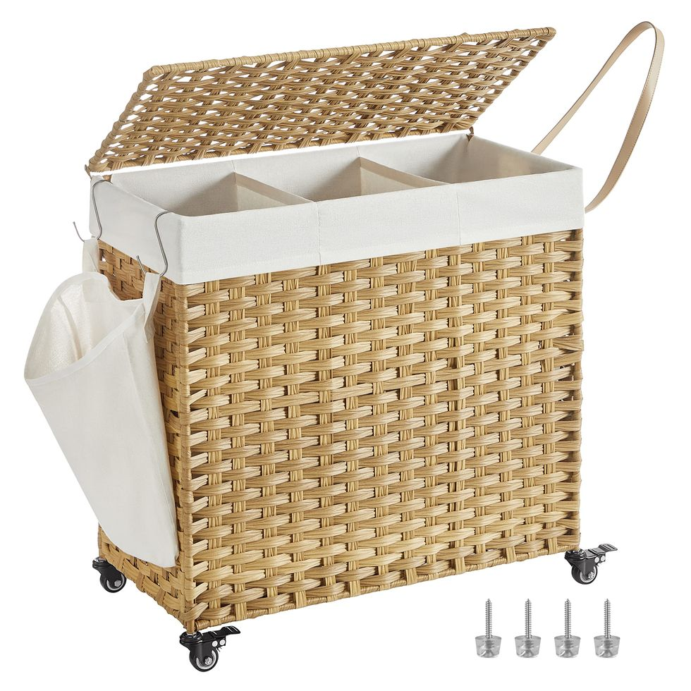
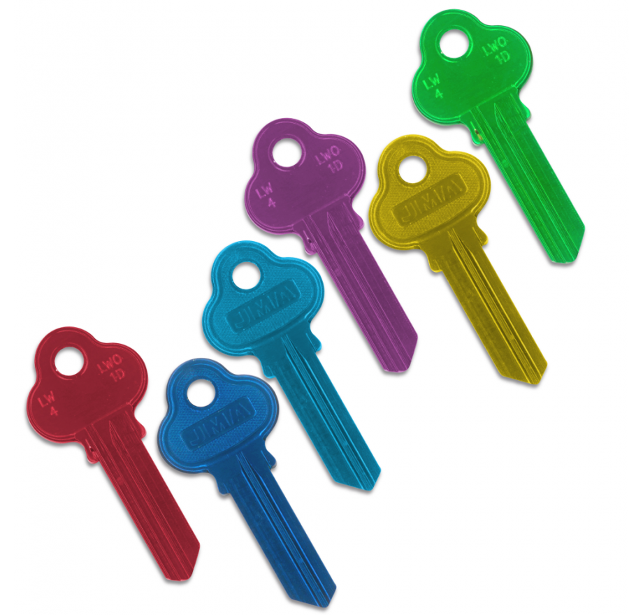

5 Useful Life Hacks
Number 1!
The first life hack on our list is to put old newspaper in the bottom of a new bin bag. This one maybe more for the older audience and the homeowners, or if you just want to impress your parents or grandparents. This is useful because it saves you or your parents having to clean the bottom of the garbage bin out when removing the bin bag because the newspaper will absorb any juices or liquids that tricle down the inside of the bin.
Number 2!
This life hack is for the people that are always losing their keys. If you have a dedicated spot or a channel of hooks to hang your keys on near the front door of your house it can be a life saver in those morning rushes when you're late for work. This way, whenever you come home, you can hang your keys up straight away and know where they are for when you next leave.
Number 3!
The third life hack on our list is for the lazy morning people and the constant alarm snoozing. If you are one of these people (I am), then try placing your alarm somewhere out of arms reach, preferrably somewhere you would have to get out of bed to turn it. This way when you turn your alarm off you'll already be up and out of bed, reducing the chances of you just snoozing your alarm and going back to sleep only for your alarm to ring again.
Number 4!
This is another simple life hack for the new home owners. Having three wash baskets for your lights, darks and coloured clothes to save your time seperating them from the same pile ever time you want to put the washing on. This is a very easy and time beneficial one because sivving through a households clothes and seperating them can be time wasting when there's other things to be doing.
Number 5!
Finally, the fifth life hack. This one is for the students. When it comes to homework or assignments or even essays, you should make your own timetable for the subjects you have chosen. You should then organise them by what needs to be handed in first to the last that needs to be handed in. Another way to organise your work would be to make a list with the easiest tasks at the beginning and the harder tasks at the end. This way as you work down your list you will feel more productive because you will have crossed more tasks off of your list than you may have first expected.

A Bonus Life Hack!
A little bonus hack is another keys related one. If you're someone with a lot of similar looking keys you can colour code then however you like to differentiate between them easier. The best way to do this would be by using nail polish (always ask before using it). This is because it will not wear off as easy in your pockets like using paint would.
